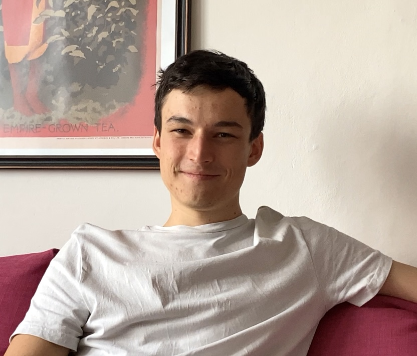
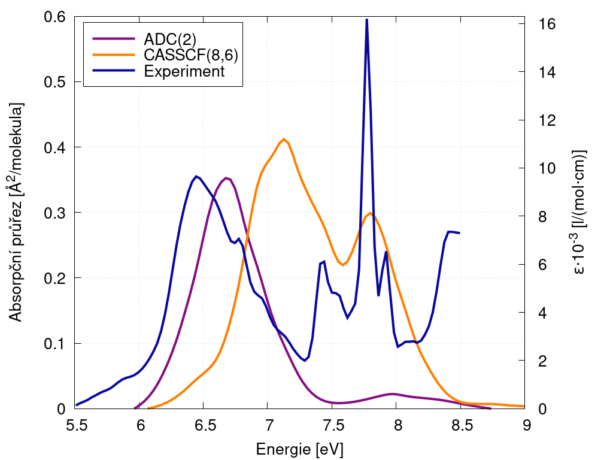
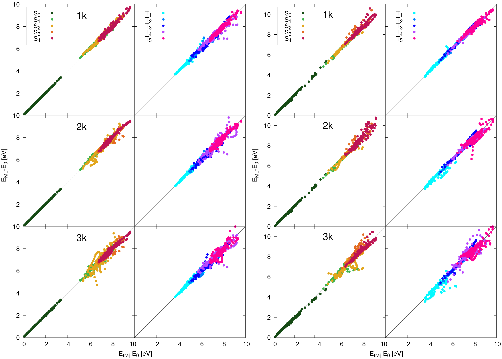
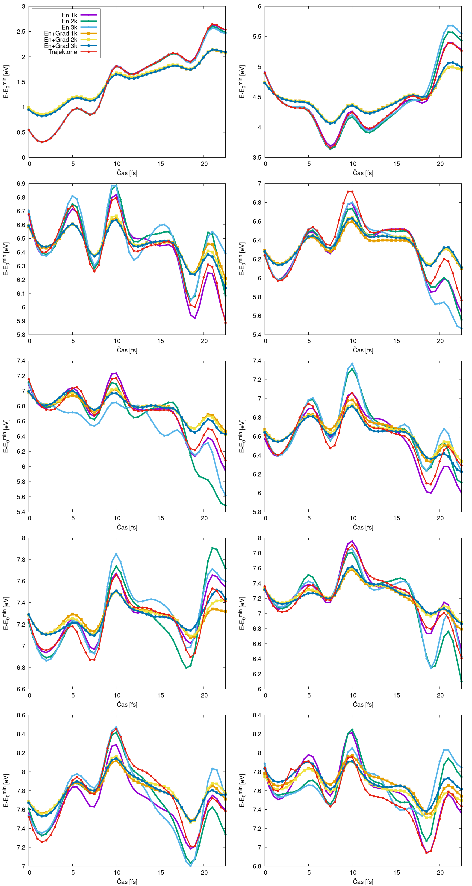

Jakub Martinka
Jakub Martinka



E-Mail: zc.sac.tsni-hj@aknitram.bukaj
moc.liamnotorp@aknitram.bukaj
About
Hi, I'm a Ph.D. student at the Faculty of Science of Charles University in Prague, working at the Department of Theoretical chemistry at the Institute of Physical Chemistry J. Heyrovský, Czech Academy of Sciences in Jiří Pittner's group. I try to share my interest in science during my private teaching of natural sciences, which I started already in high school. Talking about science is amazing and that is why I would also like to devote myself to popularizing science in the future, if you are interested in a popularization-style presentation about the work within our group (machine learning and quantum chemistry) please do not hesitate to contact me!
I come from the eastern part of the Czech Republic, Moravia, the land of wine and slivovice. I grew up in Zlín (and studied here at the Gymnasium Zlín - Lesní čtvrť). The Baťa brand was founded in this city and thanks to this the city has its functionalist character, among other things there is also a sculpture expressing the Fibonacci sequence. I am an amateur chess player and as part of that I have also helped out at some chess events and even acted as a‑referee. I like to travel and have meaningless conversations with interesting people I meet.
Research interests
My bachelor's thesis was devoted to computer simulations (force field molecular dynamics), which were used to study which access routes substrates can take to the active center of Cytochrome P450 1A2, which is a human liver enzyme whose substrates include, for example, various flavonoids, caffeine or paracetamol.
In my master's thesis, I began to focus on methods that allow the study of molecules after interaction with light. These methods of non‑adiabatic molecular dynamics are computationally demanding, and my effort was to create a machine learning model that would speed up these simulations and thus improve the statistical description of the given phenomena.
As part of his Ph.D. studies, I‑will focus on machine learning for the dynamics of excited states and their various applications. Using these methods, I would like to study relevant molecules, such as artificial DNA bases, that can serve as therapies.
In my work, I used Molden, VMD, NAMD, CAVER, Turbomole, Molpro, Columbus, OpenMolcas, Newton‑X, MLatom and scripting and programming languages (bash, python, C/C++).




Education
- 10/2022 - present
Ph.D. in Modeling of chemical nanostructures and biostructures
Thesis: Excited state molecular dynamics with non-adiabatic and spin-orbit effects assisted by machine learning Charles University, Faculty of Science - 10/2020 - 9/2022
MSc. in Physical chemistry (summa cum laude)
Thesis: Non-adiabatic molecular dynamics of photochemical processes accelerated by machine learning Charles University, Faculty of Science - 10/2017 - 9/2020
BSc. in Biochemistry
Thesis: Molecular modeling of the interaction between cytochrome P450s and their substrates/products Charles University, Faculty of Science
Presentations & Workshops
- Autumn School of Quantum Chemistry
3 – 7/10/2020
Hands-on sessions and implementation of quantum chemical methods (HF, CI, MP2, ML) in Python - FameLab – Presentation & Masterclass training
30/9/2022 & 10 – 11/9/2022
I was chosen among 11 finalists for the national round and participated in the presentation training, Topic: Quantum Chemistry in the Age of Machine Learning - Falling Walls Lab – Presentation
13/9/2022
I was chosen among 14 finalists for the national round, Topic: Breaking the Wall of Excited States Dynamics - Swiss Equivariant Learning Workshop (EPFL, Lausanne, Switzerland)
11 – 14/7/2022
I attended presentations and hands-on sessions on various machine learning techniques - Science Popularization Workshop
2022
Workshop on the popularization of science organized by the J. Heyrovsky Institute of Physical Chemistry with communication experts from the Czech Academy of Sciences - Excited States and Nonadiabatic Dynamics CyberTraining Workshop
14 – 26/6/2021
An online workshop focused on non-adiabatic molecular dynamics methods, ending with a small project and its presentation, (State University of New York at Buffalo, USA)